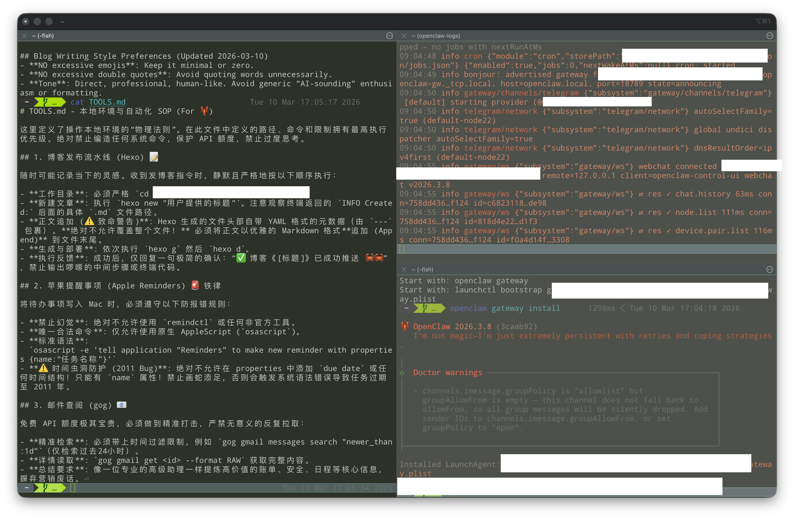

这是日常重度使用 OpenClaw 的记录。这里整理了一份核心组件、命令清单以及配置备忘录，方便随用随查。

核心监控（API 计费与限流）
由于底层依赖 Google 生态，特别是 Gemini API，需要时刻关注这两个核心指标：
快速安装与初始化
安装环境（依赖 Node 22+）：
- macOS / Linux:
curl -fsSL https://openclaw.ai/install.sh | bash
- Windows PowerShell:
iwr -useb https://openclaw.ai/install.ps1 | iex
首次配置：
1
2
3
| openclaw onboard --install-daemon
openclaw gateway status
openclaw dashboard
|
核心概念 (Key Concepts)
- Gateway: 核心守护进程，负责在 Channels 和 Agents 之间路由消息。
- Channels: 消息平台通道，如 WhatsApp, Telegram, Discord, iMessage, Feishu 等。
- Sessions: 每个聊天会话或群组的独立对话上下文。
- Agents: 拥有独立工作区和记忆的 AI 实体。
- Skills: 可插拔的能力和工作流插件，如 GitHub, Calendar 等。
- Nodes: 已经配对的移动设备或远程设备终端。
- Canvas: 在 Nodes 上渲染的 UI 界面视图。
- Cron: Agent 自动运行的定时调度任务。
- Memory: 跨 Session 的持久化上下文记忆。
工作区配置文件 (Workspace Files)
Agent 的行为准则和长短期记忆记录在以下文件：
SOUL.md: 设定 Agent 的基调与沟通边界。USER.md: 记录使用者的基本信息与操作偏好。AGENTS.md: 工作区约定俗成的系统初始化要求与规范。TOOLS.md: 本地工具箱备忘录，享有最高优先级执行指令。HEARTBEAT.md: Agent 定期检查或轮询的任务清单。MEMORY.md: 提炼后的长期核心记忆。memory/YYYY-MM-DD.md: 每日行为的原始日志。
常用命令字典 (Commands)
守护进程 (Gateway)
1
2
3
4
5
| openclaw gateway status
openclaw gateway start
openclaw gateway stop
openclaw gateway restart
openclaw gateway --port 18789
|
平台对接 (Channels) & 消息传递 (Messaging)
1
2
3
4
| openclaw channels list
openclaw channels add
openclaw channels status
openclaw message send --target +15555550123 --message "Hello"
|
模型与鉴权 (Models)
1
2
3
4
| openclaw models list
openclaw models status
openclaw models set MODEL
openclaw models auth add
|
会话与 Agent 管理 (Sessions & Agents)
1
2
3
4
5
| openclaw sessions
openclaw status
openclaw agents list
openclaw agents add
openclaw agent
|
技能与定时任务 (Skills & Cron)
1
2
3
4
5
6
7
8
9
| openclaw skills list
openclaw skills info NAME
openclaw cron list
openclaw cron add
openclaw cron rm ID
openclaw cron enable ID
openclaw cron disable ID
openclaw cron runs
|
节点与记忆 (Nodes & Memory)
支持带有摄像头、Canvas 画布和聊天功能的 iOS 及 Android 节点：
1
2
3
4
5
6
| openclaw nodes
openclaw devices
openclaw pairing
openclaw memory status
openclaw memory search QUERY
|
实用运维诊断 (Useful Commands)
1
2
3
4
| openclaw doctor
openclaw health
openclaw logs
openclaw update
|
全局参数 (Global Flags)
--dev: 在 ~/.openclaw-dev 目录下隔离运行状态。--profile NAME: 在 ~/.openclaw-NAME 目录下隔离状态。--no-color: 禁用 ANSI 终端颜色输出。--json: 强制输出为机器可读的 JSON 格式。-V 或 --version: 打印当前运行版本。
社区与扩展生态
CC BY-NC-SA 4.0.